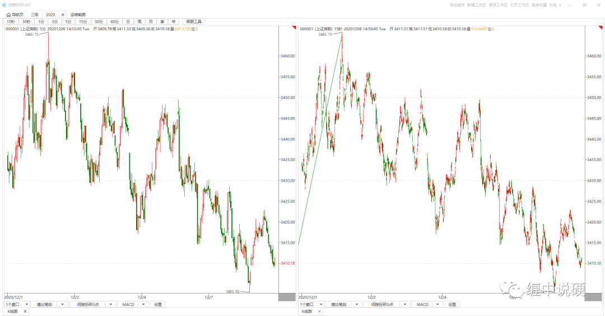
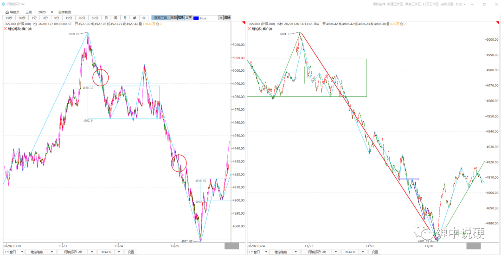
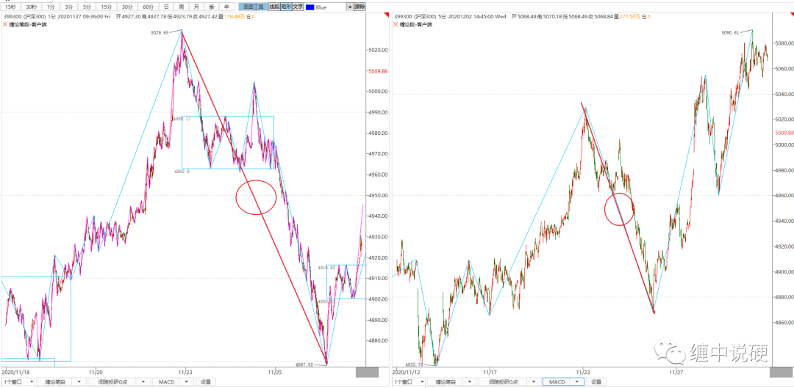

如何理解缠论的级别

上图左边是2020年12月2日10点50至今的5分钟k线图；
上图右边是2020年12月2日10点52至今的1分钟k线图；
两张图记录的是，相同时间段的交易记录；不同的是1分钟图上，有更多的交易细节。

假定在1分钟图上观察走势，发现圆圈所标识的两根1分钟线段是背驰，如果可以确定最近的1分钟线段结束，自然就可以做多了。但在1分钟图上没有足够的信息去判断，1分钟线段是否结束。
此时可以到15秒图上观察走势：15秒图上，最近的1分钟线段等价15秒段的趋势背驰。这个时候，1分钟图和15秒图建立起了级别关系，1分钟图为本级别，15秒图为次级别。

如果站在5分钟k线图的角度，1分钟图的走势，刚好在5分钟是一根5分钟线段，这个时候可以将1分钟和5分钟图建立级别对应，如果1分钟为本级别，5分钟就为大级别图，如果5分钟为本级别，1分钟就为次级别。
级别本质上是一种对应关系，站在某一个级别，那个方向的细节越来越多，就级别越小，那个方向的细节越来越少，就是级别越大。
一般情况下，将日，30分钟，5分钟，1分钟，15秒定义为相邻的级别。假定30分钟为你的本级别，日自然为大级别，5分钟自然为次级别。